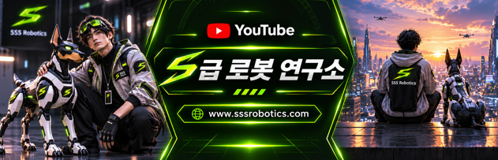
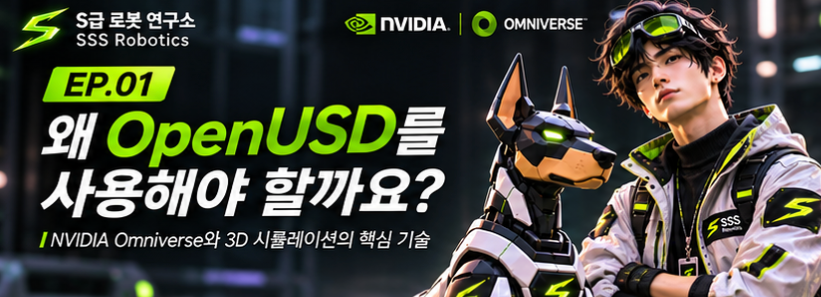
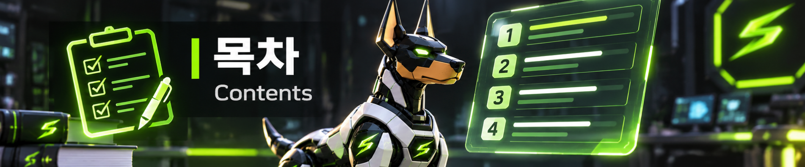
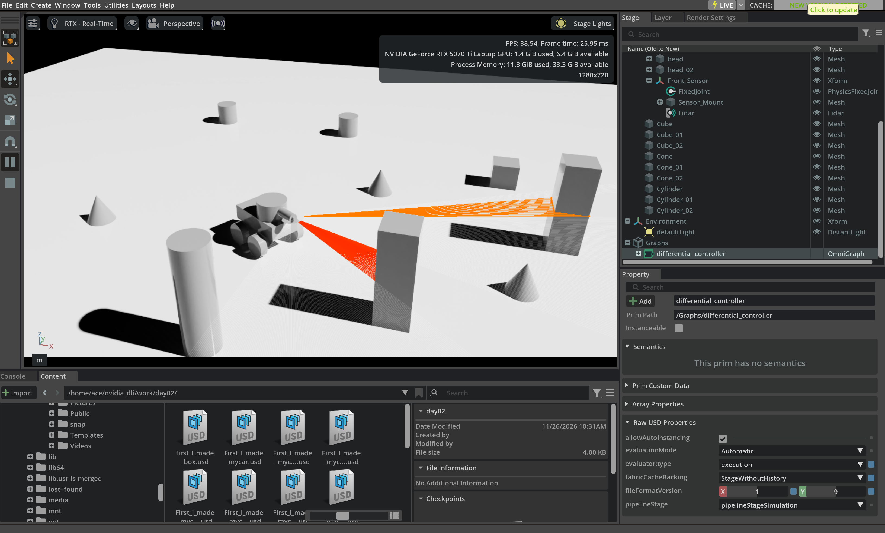
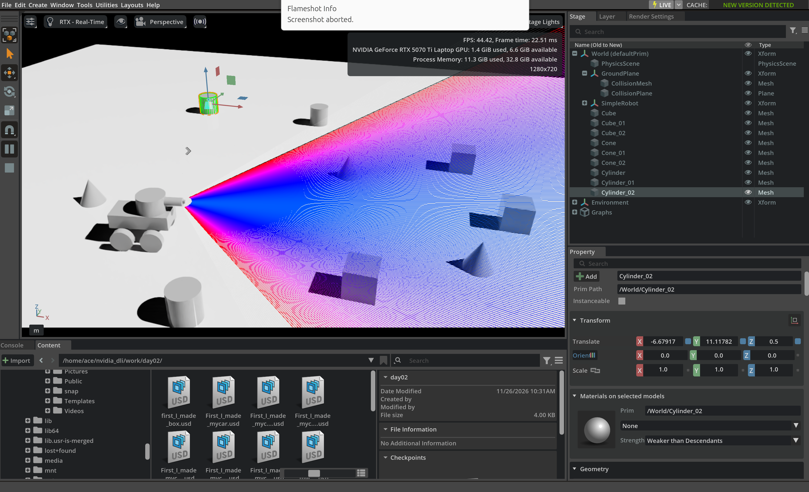
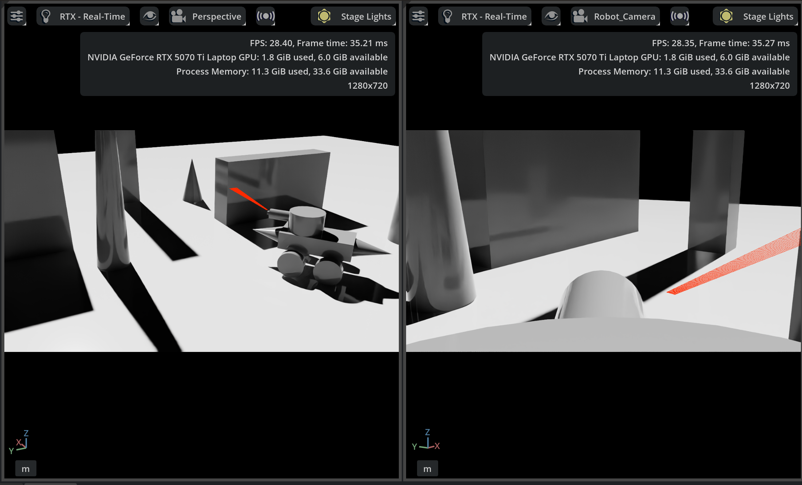
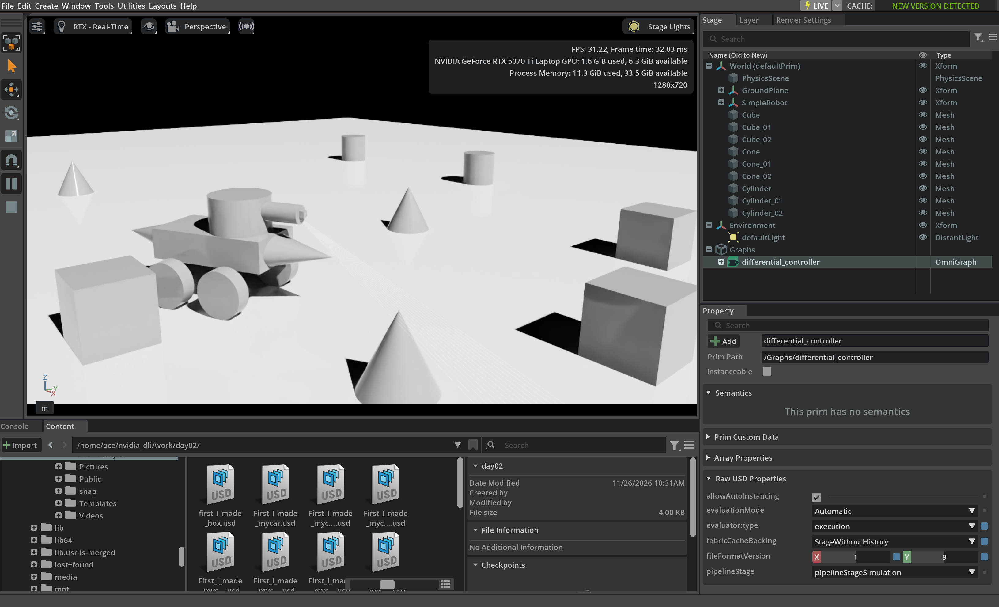
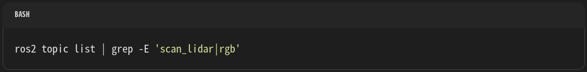
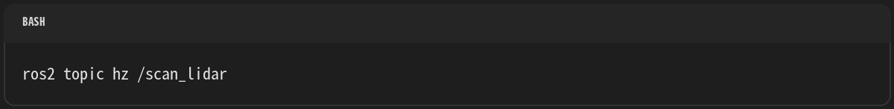
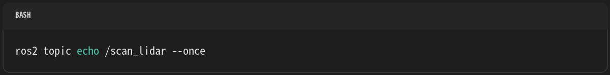

• Youtube :
https://www.youtube.com/@sssrobotics

📌 안녕하세요!
S급 로봇 연구소(SSS Robotics)입니다. 🤖지난 시간에는 Isaac Sim에서 기본 도형을 이용하여 로봇의 몸체와 바퀴, 관절을 제작하고 키보드로 직접 조종하는 과정을 학습했습니다.
오늘은 제작한 로봇에 RGB 카메라와 2D LiDAR 센서를 장착하고, 주변 환경을 인식하는 과정을 알아보겠습니다.
또한 NVIDIA Isaac Sim의 ROS 2 Bridge와 OmniGraph를 활용하여 센서 데이터를 ROS 2 Topic으로 전달하고, RViz2에서 실제 데이터를 확인합니다.
이를 통해 시뮬레이션 로봇이 단순히 움직이는 것을 넘어 주변 환경을 인식하고 외부 시스템과 데이터를 주고받는 구조를 이해합니다.

📚 목차
- 📖 오늘의 진행 내용 (Today's Topics)
- 📕 1. 로봇 센서와 Sensor Mount 구성
- 📄 1-1. 센서를 장착하는 이유
- 📄 1-2. Front_Sensor 구성
- 📕 2. RGB Camera 장착 및 영상 확인
- 📄 2-1. RGB Camera란?
- 📄 2-2. Robot_Camera 구성
- 📄 2-3. 카메라 화면 확인
- 📕 3. 2D LiDAR 장착 및 거리 측정
- 📄 3-1. LiDAR란?
- 📄 3-2. PhysX LiDAR 구성
- 📄 3-3. Collider와 장애물 인식
- 📕 4. ROS 2 통신 구조 이해
- 📄 4-1. ROS 2의 기본 용어
- 📄 4-2. ROS 2 Bridge
- 📕 5. OmniGraph를 활용한 센서 데이터 발행
- 📄 5-1. LiDAR 데이터 발행
- 📄 5-2. Camera 데이터 발행
- 📄 5-3. ROS 2 Topic 확인
- 📕 6. RViz2를 활용한 센서 데이터 시각화
- 📄 6-1. RViz2란?
- 📄 6-2. LiDAR 데이터 확인
- 📄 6-3. Camera 영상 확인
- 📕 7. Isaac Sim 5.1 주요 설정 주의사항
- 📜 회고 및 다음 과제 (Retropective&Next Steps)
- 👥 참고 문헌 (References)
- 📨 문의하기 (Contact us)
📖 오늘의 진행 내용 (Today's Topics)
📕 1. 로봇 센서와 Sensor Mount 구성

📄 1-1. 센서를 장착하는 이유
로봇이 자율적으로 움직이려면 주변 환경을 인식할 수 있어야 합니다.
이를 위해 카메라와 LiDAR 등의 센서를 장착하여 주변 물체의 영상 및 거리 정보를 수집합니다.
📄 1-2. Front_Sensor 구성
SimpleRobot의 앞쪽에 Xform 객체를 생성하고 Front_Sensor라는 이름으로 구성합니다.
- Front_Sensor: 센서들을 묶는 공간입니다.
- Fixed Joint: 센서 구조물을 로봇 몸체에 고정합니다.
- Sensor_Mount: 카메라와 센서를 장착하는 구조물입니다.
센서는 로봇이 움직이더라도 일정한 위치와 방향을 유지하도록 구성합니다.

📕 2. RGB Camera 장착 및 영상 확인
📄 2-1. RGB Camera란?
RGB Camera는 주변 환경을 색상 정보가 포함된 영상으로 수집하는 센서입니다.
물체의 형태와 색상, 주변 환경을 시각적으로 확인하는 데 활용합니다.
📄 2-2. Robot_Camera 구성
Sensor_Mount 아래에 Camera 객체를 생성하고 Robot_Camera라는 이름으로 지정합니다.
카메라의 위치와 회전값을 조정하여 로봇의 전방을 바라보도록 설정합니다.
📄 2-3. 카메라 화면 확인
Isaac Sim의 Viewport를 활용하여 로봇 전체 장면과 카메라가 바라보는 화면을 비교합니다.
이를 통해 로봇의 실제 시점에서 장애물이 어떻게 보이는지 확인합니다.

📕 3. 2D LiDAR 장착 및 거리 측정
📄 3-1. LiDAR란?
LiDAR(Light Detection and Ranging)는 레이저를 이용하여 주변 물체까지의 거리를 측정하는 센서입니다.
측정한 거리 정보를 활용하여 주변 장애물과 공간 구조를 파악할 수 있습니다.
📄 3-2. PhysX LiDAR 구성
Front_Sensor에 PhysX LiDAR를 추가하고 회전형(Rotating) 센서를 구성합니다.
센서의 높이와 측정 설정을 조정하여 주변 장애물을 탐지할 수 있도록 합니다.
📄 3-3. Collider와 장애물 인식
PhysX LiDAR는 물체의 시각적인 모양이 아니라 물리적인 충돌 형상을 기준으로 측정합니다.
따라서 장애물이 화면에 보이더라도 Collider가 설정되어 있지 않으면 LiDAR가 정상적으로 감지하지 못할 수 있습니다.
장애물에 Rigid Body와 Collider를 설정한 뒤 LiDAR의 측정 결과를 비교합니다.

📕 4. ROS 2 통신 구조 이해
📄 4-1. ROS 2의 기본 용어
ROS 2는 로봇의 여러 기능이 데이터를 주고받을 수 있도록 지원하는 통신 프레임워크입니다.
이번 실습에서 알아야 할 주요 용어는 다음과 같습니다.
- Node: 특정 기능을 수행하는 ROS 2 실행 단위입니다.
- Topic: 노드 간 데이터를 주고받는 통신 경로입니다.
- Message: Topic을 통해 전달되는 데이터 형식입니다.
- Frame ID: 데이터가 기준으로 삼는 좌표 프레임을 나타냅니다.
📄 4-2. ROS 2 Bridge
Isaac Sim은 ROS 2 Bridge Extension을 통해 ROS 2와 통신할 수 있습니다.
OmniGraph에 ROS 2 관련 노드를 추가하면 시뮬레이션에서 생성한 센서 데이터를 ROS 2 Topic으로 발행할 수 있습니다.
📕 5. OmniGraph를 활용한 센서 데이터 발행
📄 5-1. LiDAR 데이터 발행
Action Graph를 생성하고 LiDAR 데이터를 ROS 2 LaserScan 메시지로 변환하는 노드들을 연결합니다.
주요 구성요소는 다음과 같습니다.
- On Playback Tick: 시뮬레이션 실행 시 그래프를 동작시킵니다.
- Isaac Read Lidar Beams: LiDAR 측정 데이터를 읽습니다.
- ROS2 Publish Laser Scan: 측정 데이터를 ROS 2 Topic으로 발행합니다.
- Isaac Read Simulation Time: 시뮬레이션 시간을 가져옵니다.
Topic Name은 scan_lidar로 설정하며, Frame ID는 sim_lidar를 사용합니다.
📄 5-2. Camera 데이터 발행
카메라 데이터는 Render Product와 ROS2 Camera Helper 노드를 활용하여 발행합니다.
- Isaac Create Render Product: 카메라의 렌더링 결과를 생성합니다.
- ROS2 Camera Helper: 카메라 영상을 ROS 2 메시지로 발행합니다.
Topic Name은 rgb로 설정하며 Frame ID는 sim_camera를 사용합니다.
📄 5-3. ROS 2 Topic 확인
터미널에서 ROS 2 명령어를 사용하여 센서 데이터가 정상적으로 발행되는지 확인합니다.

BASH 코드
LiDAR Topic의 데이터 발행 주기도 확인할 수 있습니다.

BASH 코드
메시지 내용을 확인하려면 다음 명령어를 사용합니다.

BASH 코드
📕 6. RViz2를 활용한 센서 데이터 시각화
📄 6-1. RViz2란?
RViz2는 ROS 2에서 전달되는 로봇과 센서 데이터를 시각적으로 확인할 수 있는 3D 시각화 도구입니다.
로봇의 센서 정보와 좌표계, 주변 환경 등을 확인하는 데 활용합니다.
📄 6-2. LiDAR 데이터 확인
RViz2를 실행하고 Global Options의 Fixed Frame을 sim_lidar로 설정합니다.
이후 /scan_lidar Topic을 LaserScan Display로 추가하여 LiDAR 측정 결과를 확인합니다.
📄 6-3. Camera 영상 확인
/rgb Topic을 Image Display로 추가하여 Isaac Sim의 Robot_Camera에서 전달되는 영상을 확인합니다.
이를 통해 시뮬레이터에서 생성한 영상 및 거리 정보가 ROS 2를 통해 RViz2까지 전달되는 것을 확인합니다.
📕 7. Isaac Sim 5.1 주요 설정 주의사항
이번 교육은 Isaac Sim 5.1과 ROS 2 Jazzy를 기준으로 진행합니다.
공식 교육 자료의 Isaac Sim 4.5 및 ROS 2 Humble 설정과 다른 부분은 다음과 같습니다.
- Sensor_Mount: Rigid Body를 중복으로 설정하지 않고 Colliders Preset만 적용합니다.
- Robot_Camera: Orient 값을
(90, -90, 0)으로 설정합니다. - ROS 2: Humble 대신 Jazzy 환경을 사용합니다.
- LiDAR: 충돌 형상이 설정된 장애물만 정상적으로 탐지합니다.
- RViz2: Fixed Frame을 센서의 Frame ID와 일치시켜야 합니다.
📜 회고 및 다음 과제 (Retropective&Next Steps)

💡 오늘 배운 핵심 내용
- RGB Camera는 주변 환경의 영상 정보를 수집합니다.
- LiDAR는 레이저를 활용하여 주변 물체까지의 거리를 측정합니다.
- PhysX LiDAR는 물체의 Collider를 기준으로 장애물을 인식합니다.
- ROS 2 Bridge를 통해 Isaac Sim과 ROS 2를 연결합니다.
- OmniGraph의 ROS 2 노드를 활용하여 카메라와 LiDAR 데이터를 Topic으로 발행합니다.
- RViz2에서는 Fixed Frame과 Topic을 설정하여 센서 데이터를 시각화합니다.
📝 실습 미션: 장애물 코스 주행
이번 실습에서는 직접 제작한 로봇을 활용하여 장애물 코스를 주행합니다.
- 로봇 전방에 장애물 5개 이상을 배치하고 폭 약 2.5m의 좁은 길을 구성합니다.
- 키보드를 사용하여 목표 상자 앞 1m 이내에 도착합니다.
- Isaac Sim 화면을 가리고 RViz2만 확인하면서 동일한 코스를 다시 주행합니다.
- 두 번의 주행 시간과 RViz2의 카메라 및 LiDAR 화면을 기록합니다.
💡 생각해 볼 내용
- Isaac Sim 화면을 보면서 조종할 때와 RViz2만 보고 조종할 때 어떤 차이가 있었나요?
- 센서 데이터만으로 장애물의 위치와 거리를 파악하는 데 어려움은 없었나요?
- ScaleLinear와 ScaleAngular 값을 변경하면 로봇의 조종 특성이 어떻게 달라지나요?
📋 공식 퀴즈
Google Classroom에서 해당 교육 범위의 공식 퀴즈를 진행합니다.
🚀 다음 시간 (3일차)
Ingesting Robot Assets
이번 시간에는 기본 도형을 이용하여 로봇을 직접 제작했습니다.
다음 시간에는 이미 제작된 로봇 설계 파일인 URDF와 3D 모델을 Isaac Sim으로 가져오는 방법을 학습합니다.
- URDF 구조 이해
- 기존 로봇 모델 Import
- 관절과 물리 속성 확인
- 기존 로봇 에셋과 직접 제작한 로봇 구조 비교
특히 이번 실습에서 직접 구성한 Rigid Body, Joint, Angular Drive 및 Articulation Root가 URDF Importer를 통해 어떻게 구성되는지 비교합니다.
👥 참고 문헌 (References)

- NVIDIA DLI – Building Your First Robot in Isaac Sim
- NVIDIA Isaac Sim Documentation
- ROS 2 Documentation
- RViz2 Documentation
- 교육 참고 자료
- 센서 달기 – 카메라, 2D LiDAR
- ROS 2로 데이터 보내기 – LaserScan, 카메라, RViz2
- 정리 및 미션
📨 문의하기 (Contact us)


- Youtube :
https://www.youtube.com/@sssrobotics - Blog :
https://www.sssrobotics.com
#S급로봇연구소 #로봇연구소 #sssrobotics #sss #OpenUSD #NVIDIA #IsaacSim #Omniverse #Robotics #PhysicalAI #피지컬AI #로봇 #시뮬레이션 #AI #AX #robot #simulation #엔비디아